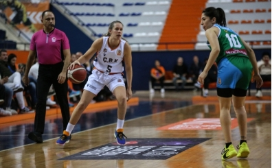

Panathinaikos, Fatih Terim'i açıkladı
Panathinaikos, teknik direktörlük görevine Fatih Terim'in getirildiğini açıkladı! .
haberin devamı için tıklayınız.

İzmit Belediyespor deplasmanda zorlanarak kazandı
ING Kadınlar Basketbol Süper Ligi karşılaşmasında Mehmet Kavan Yapı İzmit Belediyespor deplasmanda ÇBK Mersin'i 76-73 mağlup etti. .
haberin devamı için tıklayınız.

Galatasaray, İlkin Aydın'la yola devam dedi!
Galatasaray Daikin, İlkin Aydın'ın sözleşmesini 2 yıl uzattığını açıkladı. .
haberin devamı için tıklayınız.